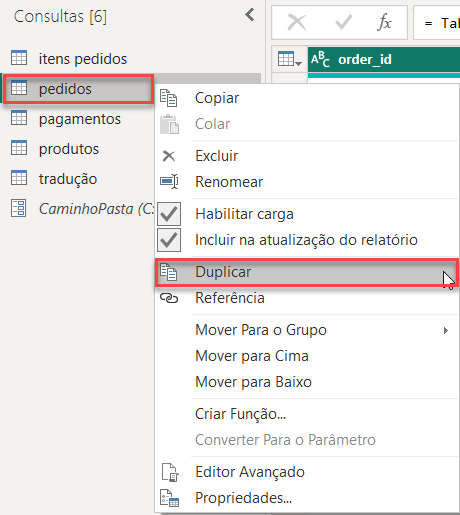
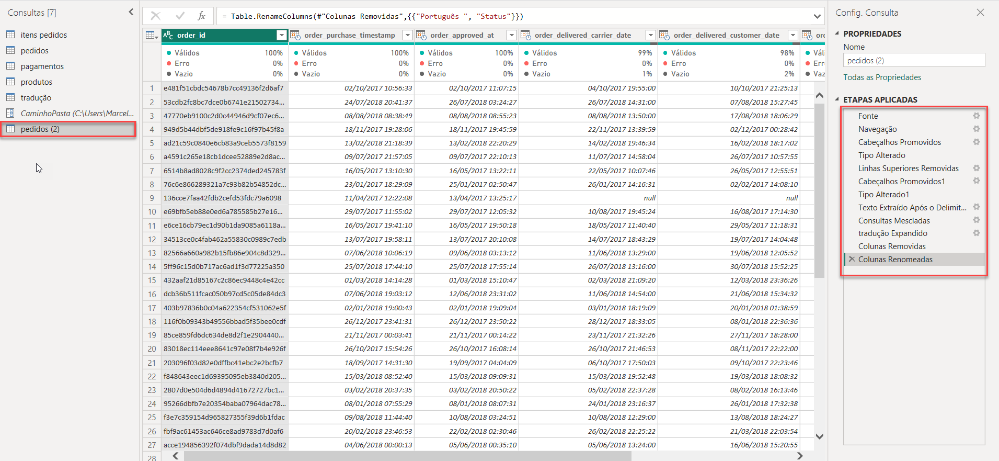
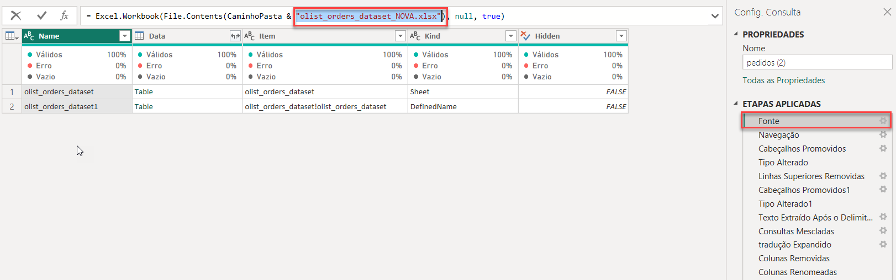
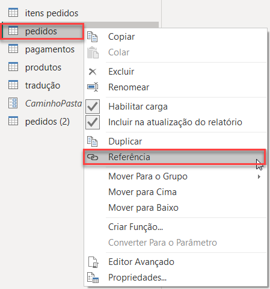
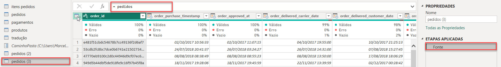
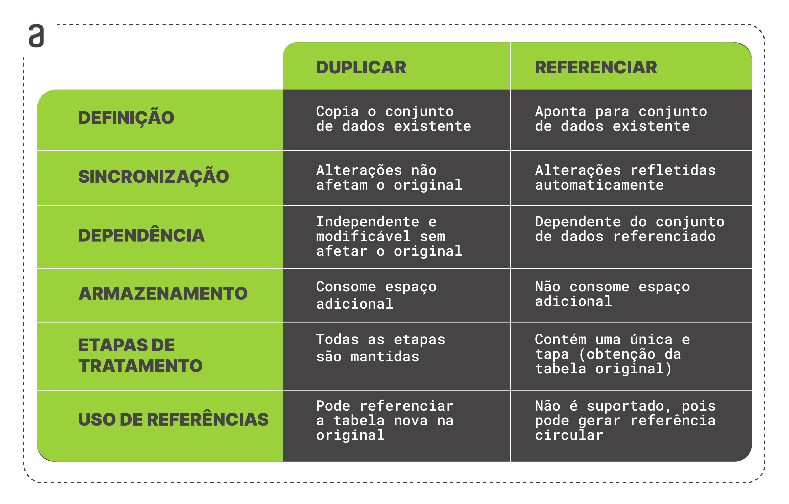

Diferenca de Duplicar e Manipular uma Tabela
Duas opções estão disponíveis: duplicar ou referenciar. Compreender a diferença entre essas opções é fundamental para utilizar o recurso de forma eficiente.
A opção de duplicar cria uma cópia independente da tabela original, permitindo trabalhar com uma versão isolada dos dados, aplicar transformações específicas ou comparar diferentes cenários sem afetar o conjunto de dados original. Por outro lado, a opção de referenciar estabelece uma conexão entre duas consultas, utilizando os resultados da consulta original como entrada. Qualquer alteração na consulta original é automaticamente refletida na consulta de referência.
A escolha entre duplicar e referenciar depende do contexto e dos objetivos do projeto. Se a necessidade é trabalhar com dados independentes, realizar experimentações ou comparar cenários, a duplicação é a melhor opção. Em contrapartida, se a intenção é combinar dados, aplicar transformações sequenciais ou reutilizar consultas, a referência é a escolha adequada.
Então, vamos aprender a fazer essas duas operações:
Duplicar uma tabela
Você pode utilizar a opção de duplicar quando você quer copiar uma tabela inteira, com todas as suas etapas de transformações.
Como exemplo, vamos imaginar que precisamos importar outra tabela com novos pedidos, e essa tabela terá a mesma estrutura da tabela que já tratamos. Nesse caso, nós podemos simplesmente duplicar a tabela de pedidos, clicando com o botão direito em cima dela e depois na opção Duplicar:

A nova tabela duplicada ficará com os tratamentos realizados na tabela original:

Agora, basta mudarmos o caminho do arquivo na fonte da tabela:

E assim teríamos a tabela com novos pedidos já com os tratamentos.
Referenciar um tabela
A referência é uma outra forma de copiar uma tabela, com a diferença de que a nova tabela gerada terá todos os tratamentos realizados na original, mas não terá as etapas, pois todas elas se tornarão uma só, que é a Fonte, representando a referência à tabela original.
Para referenciar uma tabela, o processo é parecido. Vamos clicar com o botão direito em cima dela e depois na opção Referenciar:

Abaixo, podemos verificar a etapa Fonte na nova tabela, em que podemos perceber o cálculo ´= pedidos´ no topo, indicando a referência à tabela de pedidos:

Essa etapa de Fonte significa que se você fizer alterações na tabela de pedidos original, essa nova tabela será afetada.
A referência é uma boa opção quando você deseja realizar outros tratamentos na tabela, mas sem modificar a original. Uma tabela irá seguir certos tratamentos e a outra irá continuar com tratamentos diferentes, mas as duas compartilham algumas etapas da tabela original.
Duplicar vs Referenciar
A partir de agora, sabemos que existem duas opções ao copiar uma tabela. Com isso, vamos verificar mais de perto suas diferenças.

As opções de Duplicar e Referenciar são distintas e cada uma tem suas vantagens e desvantagens. A opção de duplicar é útil quando você deseja que as duas cópias sejam independentes uma da outra, enquanto a opção de referência é adequada quando você cria ramos diferentes a partir de uma tabela original.
Fonte: Alura